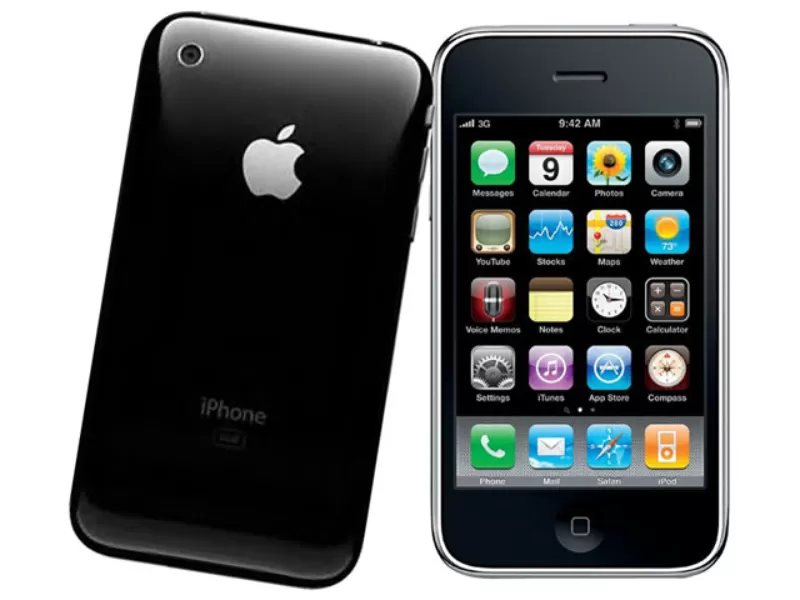

iPhone
iPhone (ретроспективно называемый первым iPhone, iPhone 2G, оригинальный iPhone или iPhone 1) — сенсорный смартфон первого поколения iPhone, разработанный и продававшийся корпорацией Apple. Был представлен 9 января 2007 года после нескольких месяцев слухов. Поступил в продажу в США 29 июня 2007 года. Вторым поколением стал iPhone 3G, был анонсирован 9 июня 2008 года.
Первый iPhone уже не получает обновлений программного обеспечения от Apple, последней версией его прошивки была iPhone OS 3.1.3.
Главному управляющему компании Apple Стиву Джобсу выпала возможность использовать идею Finger Works сенсорный экран для взаимодействия с компьютером без использования компьютерной мыши и клавиатуры. Когда он увидел прототип и его пользовательский интерфейс, ему пришла вторая идея — реализовать технологию на мобильном телефоне. Все усилия были вложены в начавшийся в 2005 году проект под названием Project Purple 2. Первый проект телефона, носивший кодовое название «Purple One», не был доведён до конца. Следующим этапом для Apple стало участие в создании мобильного телефона Motorola ROKR, вышедшего на рынок в сентябре 2005 года. Устройство позиционировалось как плеер, тесно интегрированный с проигрывателем iTunes. Интерфейс плеера в телефоне был создан Apple и напоминал интерфейс iPod. Однако, ввиду неудачного дизайна и слабой функциональности, телефон так и не получил широкого распространения и даже был назван провалом года.
Несмотря на отсутствие успеха с Motorola ROKR, уже в феврале 2005 года Стив Джобс начал переговоры о двухстороннем партнёрстве с сотовым оператором Cingular, заявив, что его компания способна и намеревается представить собственное устройство. Разработка iPhone проходила в обстановке строгой секретности. Инженеры, работавшие над различными частями (программной и аппаратной) продукта, не имели возможности общаться друг с другом. Для переговоров с Cingular представители Apple регистрировались под видом сотрудников партнёрской компании Infineon. Проект имел внутреннее название «Purple Two».
Первый iPhone был представлен Стивом Джобсом 9 января 2007 года на конференции Macworld Conference & Expo в Сан-Франциско. В своём выступлении Джобс сказал: «Я с нетерпением ждал этого в течение двух с половиной лет» и «сегодня Apple собирается переизобрести телефон». Джобс представил iPhone как сочетание трёх устройств: «широкоэкранный iPod с сенсорным управлением», «революционный мобильный телефон» и «прорывной интернет-коммуникатор». iPhone начал продаваться 29 июня 2007 года в США, где тысячи людей, как сообщалось, выстроились в очереди за несколько дней до выпуска. Чтобы избежать повторения проблем с выпуском PlayStation 3, были наняты свободные сотрудники полиции для охраны магазинов в течение ночи. В четвёртом квартале 2007 года iPhone стал продаваться в Германии, Франции и Великобритании на эксклюзивных правах с операторами T-Mobile и O2. Почти все приложения, выпущенные после выпуска iOS 6 в конце сентября 2012 года, не работают на оригинальном iPhone, так как комплект для разработки программного обеспечения был изменен.